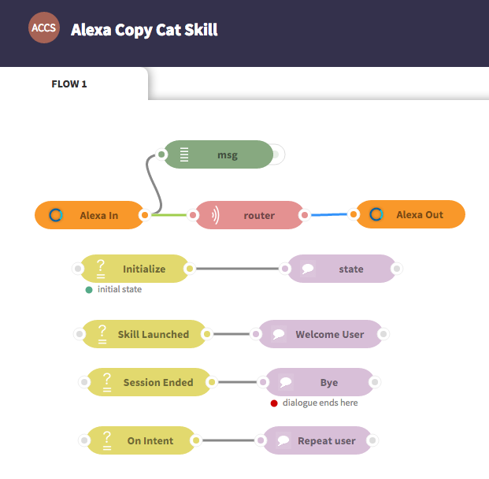
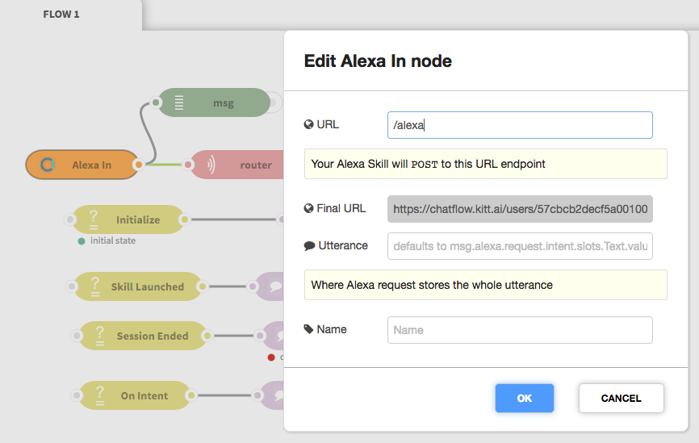
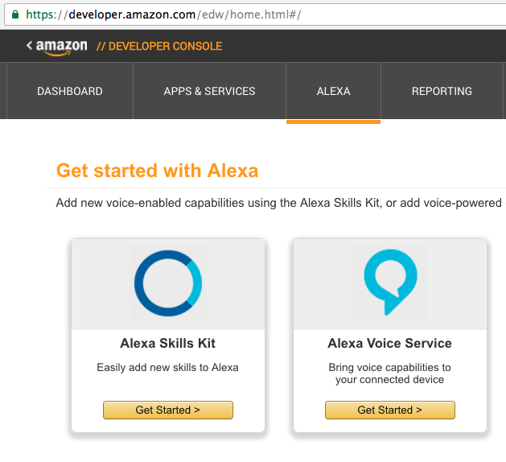
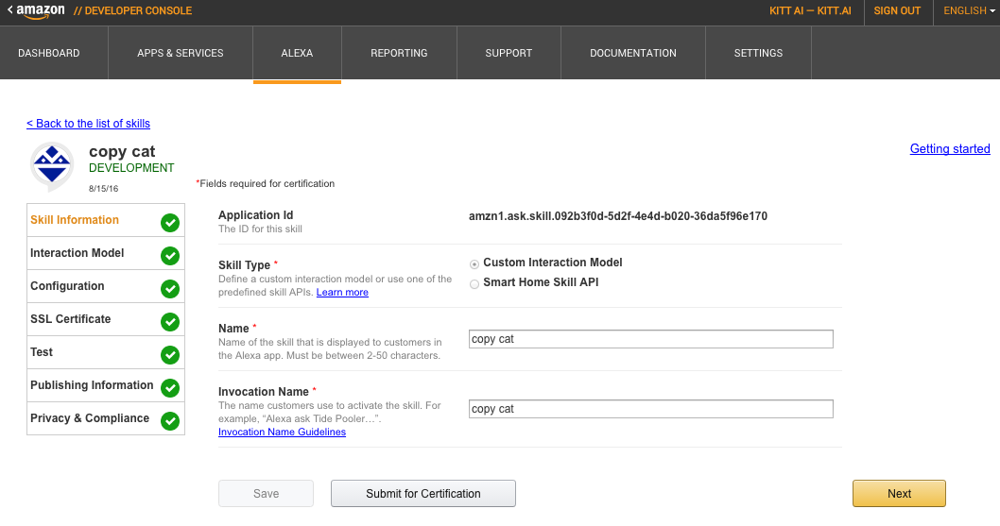
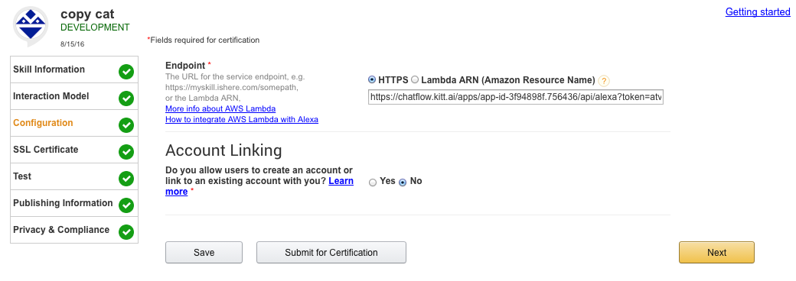
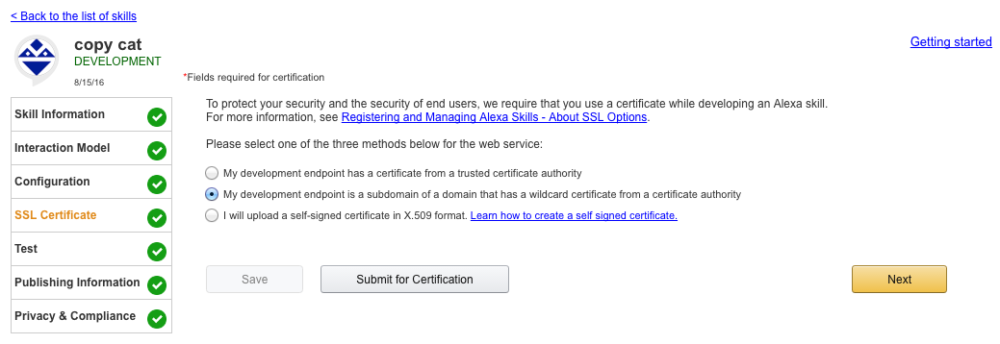
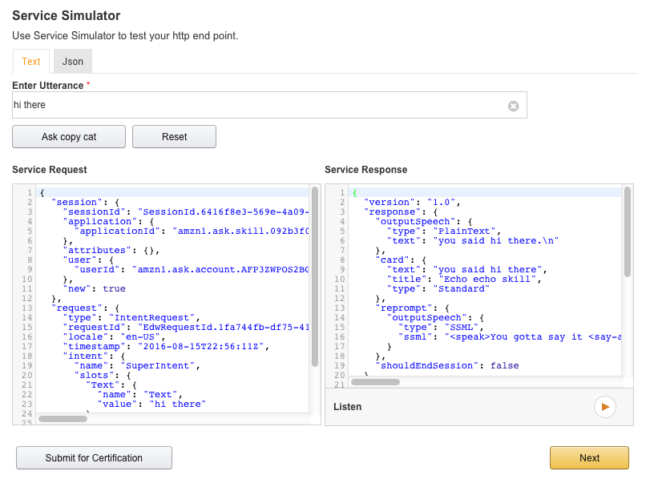
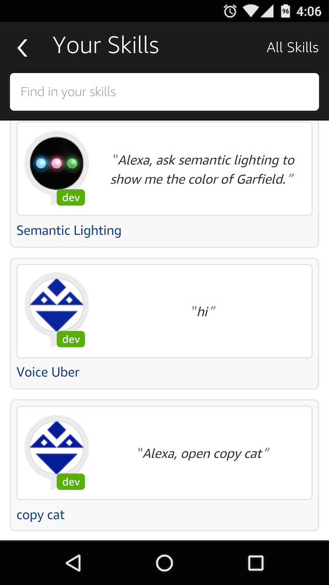
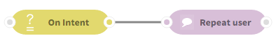
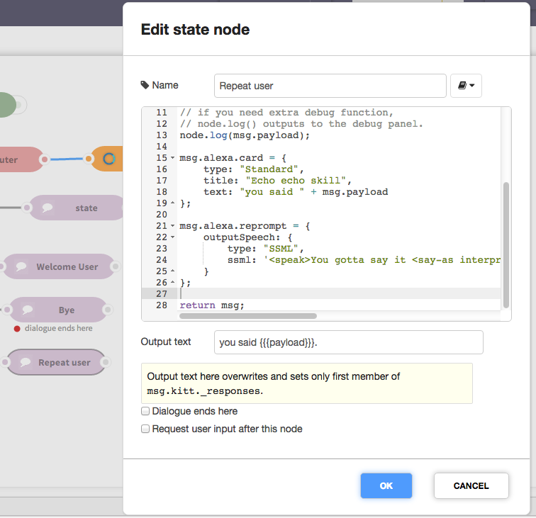

Alexa Skill Tutorials¶
Table of Contents
Introduction¶
In this tutorial we will walk through a simple Alexa skill that repeats user input. You will learn:
- How to create an Alexa skill through the Amazon developer console
- How to create an Alexa Chatflow application
- Message structures of the Alexa In and Alexa Out nodes
- How to display help card on the Alexa companion app on your smart phone
Create an Alexa Copy Cat Chatflow app¶
Go to ChatFlow and use the sample application “Alexa Copy Cat Skill”:
This app listens on incoming message sent from your Echo device through the Alexa In node and replies it with the Alexa Out node. We deploy this app first to register a webhook callback address through the Alexa In node:
The “Final URL” will be used later in Step 3. Configuration.
Todo
re-take this pic to change chatflow-test to chatflow
after production server is deployed.
Now let’s go to the Amazon developer console and register an Alexa skill there.
Create a Copy Cat Echo skill¶
We want to create a skill that repeats what user says. For those who have worked
with an Alexa skill, you already know by default Alexa only gives you the intent
type and slots, but not the whole utterances. So the trick here is to use the
AMAZON.LITERAL slot type to make the whole utterance a slot.
Create an Alexa Skill¶
First log in to Amazon developer console and click “ALEXA” to get started with the Alexa Skills Kit:
1. Skill Information¶
On Skill Information, pick a skill name and invocation name:
On Interaction Model, input the following Intent Schema:
1 2 3 4 5 6 7 8 9 10 11 12 13 | {
"intents": [
{
"intent": "SuperIntent",
"slots": [
{
"name": "Text",
"type": "AMAZON.LITERAL"
}
]
}
]
}
|
Here for the Interaction Model,
we use the AMAZON.LITERAL to force Alexa to perform open vocabulary speech
recognition, while everything will be tagged as a single SuperIntent.
2. Sample Utterances¶
The Sample Utterances are simply two lines:
SuperIntent {z|Text}
SuperIntent {z z|Text}
We use z and z z here to enable both single-word and multi-word recognition.
3. Configuration¶
Enter the “Final URL” from Alexa In node:
4. SSL Certificate¶
KITT.AI uses a wildcard SSL certificate so select the second option:
5. Test¶
Amazon provides a Voice & Service simulator before a skill is actually deployed. It is a great tool to help check and understand skill input and output. Here we simply input “hello there” to inspect the output from your Chatflow app:
6. Finishing up¶
Now please fill in the forms from Publishing Information and Privacy & Compliance*. Do not click “Submit for Certification”.
Open up your Alexa companion app from cellphone, under “Your skills”, you should find your Copy Cat skill (only available to you):
{kind=link}
Test your skill with an Echo¶
Now let’s use a real Echo device to test the Copy Cat app.
Incoming Message Structures¶
The Alexa In node wraps an external request in msg.alexa, which follows
the Alexa Request Format.
There are three types of requests:
- LaunchRequest:
when you say “Alexa, open <skill invocation name>”. At this time, Alexa should
play a welcome message or provide usage instructions.
msg.kitt._skill_launchedis set totrue. - IntentRequest:
when you engage with a skill in a session. The very first message in this session
has
msg.alexa.session.new = true. The rest has itfalse.msg.kitt._session_startedreflects this. - SessionEndedRequest:
when you explicitly asks Alexa to exit from session, such as by saying “exit”.
msg.kitt._session_endedis set totrue.
Additionally, msg.kitt also automatically sets:
msg.kitt._session_idfrommsg.alexa.session.sessionId, used by the Router.msg.kitt._user_idfrommsg.alexa.session.user.userId, used by the Router.msg.kitt._timeout(by default 30 seconds), used by the Router.msg.kitt._access_tokenfrommsg.alexa.session.user.accessTokenif it appears. It’s the remote access token if user has enabled account linking.
We will discuss msg.NLU in Intent Request and outgoing message
structures in Card and Reprompt.
Launch Skill¶
You: “Alexa, open Copy Cat.”
Echo: “Welcome. This is an Alexa Echo skill.”
When a user explicitly launches a skill, msg.kitt_skill_launched is set to
true, which is handled by the following enter node:
Intent Request¶
You: “Alexa, ask Copy Cat to repeat what I said.”
Echo: “I heard repeat what I said.”
In companion Alexa app: a card shows up.
When user says “ask Copy Cat to repeat what I said”, the utterance repeat what I said is actually matched against 2. Sample Utterances:
SuperIntent {z|Text}
SuperIntent {z z|Text}
Then msg.alexa.request will have the following intent property:
"intent": {
"name": "SuperIntent",
"slots": {
"Text": {
"name": "Text",
"value": "repeat what I said"
}
}
}
Here we captured the whole utterance. By default the Alexa In node sets
this utterance from msg.alexa.request.intent.slots.Text.value to msg.payload:
Of course you can specify your own if you used a different Intent Schema.
Then when new utterances come, the On Intent enter node handles them to echo back the utterances:
When your Echo replies, not only does it say:
Echo: “I heard repeat what I said.”
but also the companion app shows a card. If you do not respond, Alexa will reprompt you:
“You gotta say it S-L-O-W-L-Y slowly.”
This is achieved by setting msg.alexa.card and msg.alexa.reprompt.
Card and Reprompt¶
The Repeat User state node defines how the outgoing messages look like:
Here msg.alexa.card follows the format of
Card Object
and msg.alexa.reprompt follows Reprompt Object.
The final output from Alexa Out would follow the Alexa Response Format.
Ask or Tell?¶
If you want the current session to end, then in the state node, just specify:
msg.kitt._session_ended = true;
Alexa would end current session without expecting another user input.
Otherwise, Alexa would be waiting for user input, and if to no avail, reprompt user.
More Advanced Tutorials¶
So far we have created an “Echo” (we called it Copy Cat) Echo skill by forcing Alexa output the utterance verbatim. However, we did not deal with understanding the sentence at all. There are two ways to go from here:
- Simply plug in a KITT.AI NLU node to handle NLU ourselves:
However, we do not recommend this way because Alexa’s speech output might not be perfect. Instead we suggest:
2. Use Alexa’s own NLU with its language model smoothed out with in-domain utterances. We have created a more advanced tutorial next.